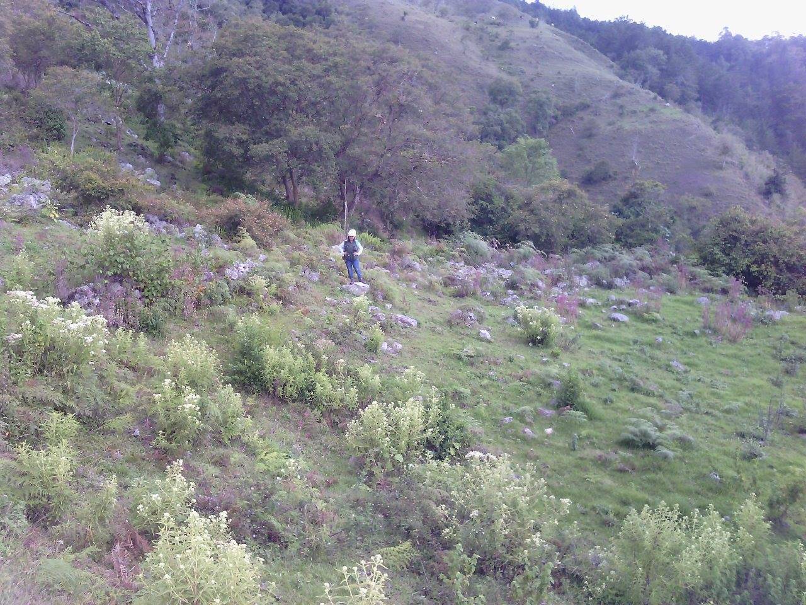
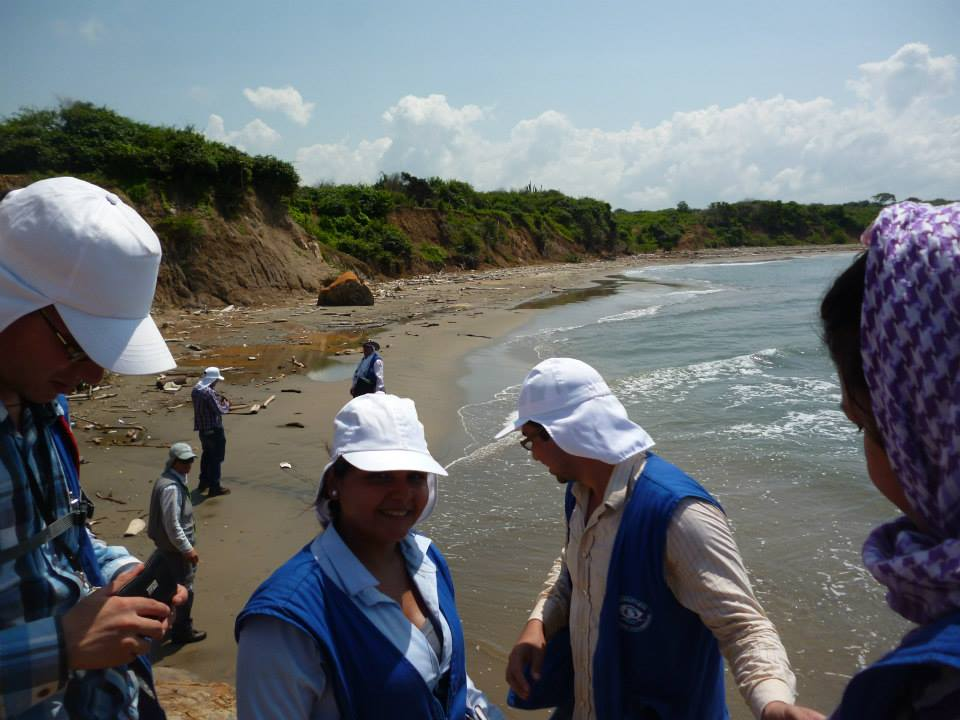
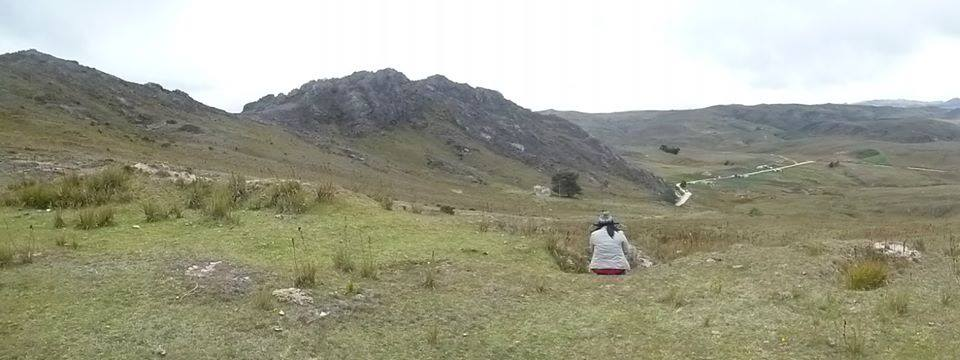
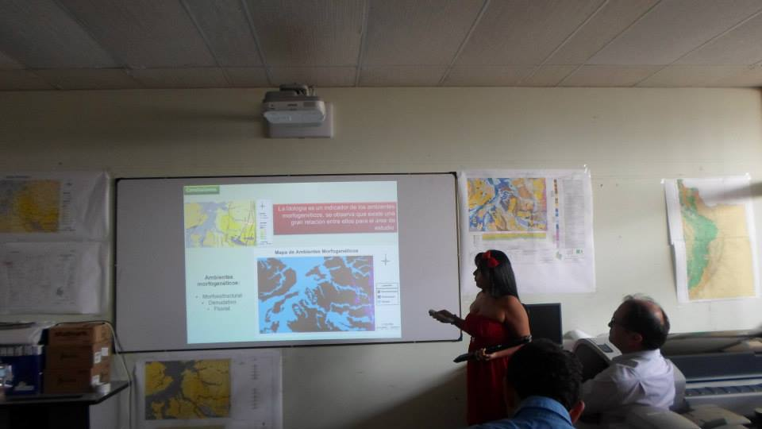
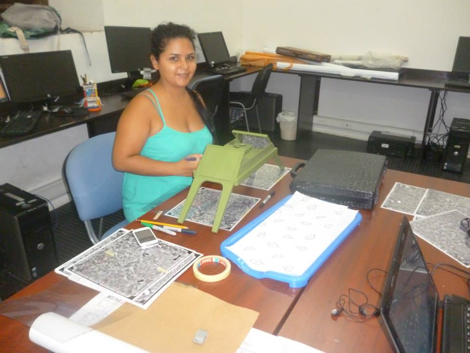

Projects
Geological and engineering geological mapping in Surata for a dam construction
Detailed geological and engineering geological mapping in Surata for the construction of a dam.
Geological and engineering geological mapping in Bolivar for Natural hazards
Comprehensive geological and engineering geological mapping in Bolivar to identify natural hazards.
Geological and engineering geological mapping in Cienaga Zapatosa for Natural hazards
Mapping and analysis of geological and engineering geological features in Cienaga Zapatosa to assess natural hazards.
Morphological and Morphodynamical Aspects Applied to the Zoning of Relative Hazard by Landslide in Plate 119 Barrancabermeja
Study of morphological and morphodynamical aspects applied to landslide hazard zoning in Barrancabermeja.
Territorial Planning Plan of the Municipality of Piedecuesta
Development of a territorial planning plan for the municipality of Piedecuesta.
SILAP (Local System of Protected Areas) San Silvestre swamp

Implementation of a local system of protected areas in San Silvestre swamp.
SILAP (Local System of Protected Areas) La Cira swamp

Establishment of a protected area system in La Cira swamp.
SILAP (Local System of Protected Areas) La Cira Forest

Creation of a protected area system in La Cira forest.
PMA (Environmental Management Plan) Juan Estan swamp

Development of an environmental management plan for Juan Estan swamp.
PORH (Water Management Plan) San Silvestre swamp

Formulation of a water management plan for San Silvestre swamp.
Dynamic cadastre

Implementation of a dynamic cadastre system.
Cadastral property conflicts

Resolution of cadastral property conflicts.